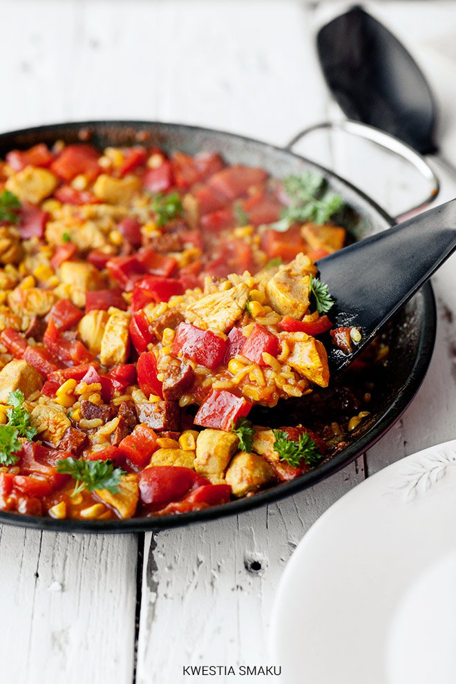

Paella z kurczakiem i chorizo
Przygotowanie:
- Bulion zagotować razem z szafranem. Chorizo pokroić w 0,8 cm kostkę. Filety oczyścić z kostek i włókien, pokroić w 1,5 cm kostkę. Paprykę pokroić w 1,5 cm kostkę, ziarna kukurydzy odciąć od kolby. Czosnek zetrzeć na drobnej tarce.
Pomidora sparzyć, obrać ze skórki, pokroić w kostkę (odrzucić nadmiar soku i nasiona z komór).
- Rozgrzać 2 łyżki oliwy na dużej patelni o średnicy min. 26 cm. Dodać chorizo i chwilę je obsmażyć aż wytopi się tłuszcz. Dodać kurczaka i obsmażyć go dokładnie z każdej strony (około 3 minuty). W połowie obsmażania dodać czosnek.
- Dodać łyżkę oliwy, paprykę i kukurydzę i podsmażyć ok. 2 minuty. Dodać pomidora i smażyć dalej przez około 3 minuty, co chwilę mieszając.
- Wlać wino, wymieszać i gotować przez około 4 minuty na większym ogniu aż wino odparuje. Dodać sos pomidorowy i przyprawy (paprykę i kurkumę), wymieszać. Po chwili wsypać ryż i podsmażyć przez kolejne 2 minuty.
- Wlać przecedzony gorący bulion, wymieszać i zagotować. Gotować bez mieszania przez 12 minut, następnie zmniejszyć ogień do minimum, przykryć szczelnie patelnię folią aluminiową i gotować kolejne 6 minut (przykrytą paelle można też
na ten czas włożyć do rozgrzanego do 180 st. C piekarnika). Odstawić z ognia i trzymać pod przykryciem jeszcze przez 2 minuty.
- Zdjąć folię, można polać oliwą z natką pietruszki i czosnkiem.
Składniki
// 4 porcje
- 1 litr bulionu drobiowego lub warzywnego
- szczypta szafranu (kilkanaście nitek, ok. 0,2 g)
- 100 g kiełbaski chorizo
- 400 g filetów z kurczaka
- 2 ząbki czosnku
- 1 łyżka oliwy
- 1 czerwona papryka
- 1 świeża kukurydza (lub mała puszka ok. 170g, odsączona)
- 1 duży pomidor
- 1/2 szklanki białego wina
- 4 łyżki sosu pomidorowego (passaty) lub 1 łyżka koncentratu pomidorowego
- 1/2 łyżeczki mielonej papryki słodkiej (lub wędzonej)
- 1/3 łyżeczki mielonej papryki ostrej (lub pieprzu cayenne)
- 1/2 łyżeczki mielonej kurkumy
- 300 g ryżu do paelli lub ryżu arborio (jak do risotto) lub ryżu do sushi
Gazpacho
Przygotowanie:
- Pomidory sparzyć wrzątkiem, obrać. Pokroić na kawałki, odrzucić szypułki, można też choć niekoniecznie przetrzeć na sitku aby pozbyć się nasion.
- Tak przygotowane pomidory włożyć do blendera, dodać obrane i pokrojone ogórki, cebulę, czosnek oraz paprykę. Dodać chili, sok z limonki, ocet winny, oliwę oraz pieczywo.
- Wszystko dokładnie zmiksować. Doprawić solą i świeżo zmielonym pieprzem oraz w razie konieczności cukrem i większą ilością chili.s
- Chłodzić w lodówce przez ok. 2 godziny (można też włożyć do zamrażarki aby przyspieszyć schładzanie). Podawać opcjonalnie z salsą lub/i fetą.
Składniki
// 2 - 4 porcji
- 1 kg pomidorów
- 2 małe ogórki gruntowe lub 1/3 dużego ogórka szklarniowego
- 1/4 papryki
- 2 plastry cebuli
- 1/2 ząbka czosnku
- kawałeczek papryczki chili
- 1 łyżka soku z limonki lub cytryny
- 2 łyżeczki octu winnego
- 4 łyżki oliwy extra vergine
- 3/4 szklanki miąższu białego pieczywa
Churros
Przygotowanie:
- Wodę zagotować z masłem, cukrem wanilinowym, cukrem i solą.
- Dodać mąkę i mieszać (ucierać) drewnianą łyżką przez ok. 2 minuty, aż powstanie gładka, sprężysta i odchodząca od brzegów garnka masa.
- Odstawić z ognia i postawić garnek na desce. Przestudzić (ok. 30 minut).
- Wbić jedno jajko i mieszać drewnianą łyżką do połączenia się składników w jednolite ciasto. Powtórzyć z dwoma kolejnymi jajkami, za każdym razem mieszając do połączenia składników.
- Przełożyć je do rękawa cukierniczego. Rozgrzać tłuszcz w garnku (180 stopni C). Wyciskać ok. 8 - 10 cm kawałki ciasta bezpośrednio do tłuszczu. Końce odcinać nożyczkami lub nożem.
- Smażyć partiami po parę sztuk, po około 2 minuty z każdej strony na złoty kolor, wyławiać łyżką cedzakową i odkładać na talerz wyłożony ręcznikami papierowymi. Po przestudzeniu posypać cukrem pudrem z cynamonem.
- Sos czekoladowy:
śmietankę zagotować, odstawić z ognia, dodać połamaną na kosteczki czekoladę, mieszać do rozpuszczenia i otrzymania gładkiego sosu.
Składniki
// około 30 sztuk
- 1 szklanka (250 ml) wody
- 100 g masła
- 1 łyżka cukru wanilinowego
- 2 łyżki cukru
- szczypta soli
- 1 szklanka mąki pszennej
- 3 jajka